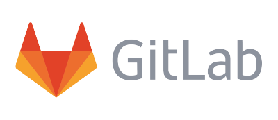
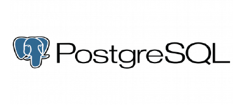
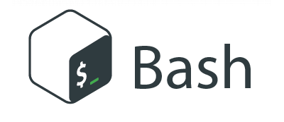
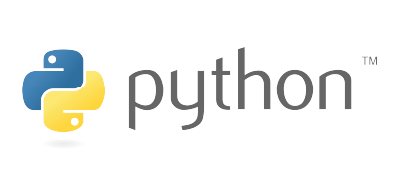
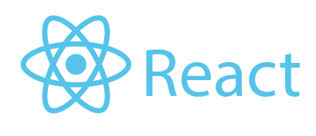
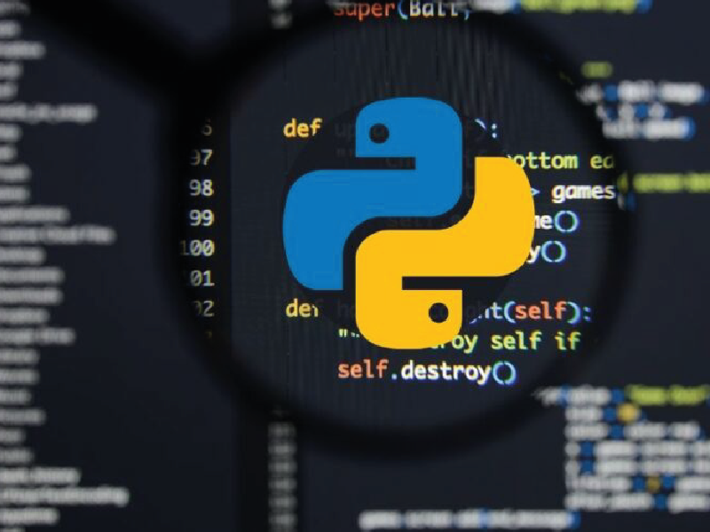

ATIC Perú S. R. L.
Aplicaciones Transaccionales de Información y Comunicaciones
ATIC Perú es una empresa constituida con N° de RUC: 20568216190, que inició sus actividades en enero de 2012

Somos una empresa peruana especializada en consultoría y desarrollo de soluciones tecnológicas, orientadas a optimizar los procesos de negocio de organizaciones de todos los tamaños.
Nuestro propósito es ayudar a las empresas a digitalizar, automatizar y controlar sus operaciones mediante herramientas modernas, seguras y adaptadas a sus necesidades.
Con una sólida trayectoria en el sector industrial, comercial y gubernamental, brindamos servicios integrales que van desde la planificación estratégica de TI hasta la implementación completa de sistemas de información.
¿Por qué elegirnos?
- Contamos más de 10 años de experiencia desarrollando soluciones tecnológicas innovadoras.
- Soporte técnico permanente con personal calificado y atención inmediata.
- Soluciones escalables y seguras, pensadas para crecer junto con su negocio.
- Compromiso y confidencialidad, garantizando la protección de su información.
En ATIC Perú creemos que la tecnología debe ser una herramienta para el crecimiento sostenible. Por ello, acompañamos a nuestros clientes en cada etapa del proceso, asegurando resultados tangibles, eficiencia operativa y rentabilidad empresarial.
Usuarios felices
Proyectos en funcionamiento
Empresas optimizadas con proyectos de información
Personas liderando y dirigiendo.
Servicios
Servicios profesionales

Software para Colegios Profesionales
Sistema web para colegiados, aportes, habilitaciones, constancias, caja y atención al agremiado.





Ayudamos a las empresas a construir infraestructuras tecnológicas seguras, estables y preparadas para el futuro.
Nuestro objetivo es garantizar que cada componente de tu entorno digital —desde servidores hasta redes y aplicaciones— opere con eficiencia, alto rendimiento y total protección frente a amenazas cibernéticas.
- Evaluación integral de infraestructura: diagnóstico completo de redes, servidores, estaciones de trabajo y servicios en la nube.
- Diseño de arquitectura tecnológica: planificación y optimización de entornos físicos y virtuales para garantizar escalabilidad y disponibilidad..
- Ciberseguridad preventiva y correctiva: implementación de políticas de seguridad, auditorías, firewalls, antivirus corporativos y sistemas de detección de intrusos.
- Cumplimiento normativo: asesoría para el cumplimiento de estándares de seguridad y protección de datos (ISO 27001, GDPR, Ley de Protección de Datos Personales, entre otros).
- Monitoreo y respuesta ante incidentes: gestión activa de riesgos, detección temprana de vulnerabilidades y planes de contingencia.
- Capacitación y concientización: formación continua al personal sobre buenas prácticas de seguridad digital y prevención de ataques.
Nuestro enfoque combina tecnología, estrategia y seguridad para fortalecer la base digital de tu empresa. Con la consultoría de ATIC Perú, tu organización no solo estará protegida, sino también preparada para crecer con confianza en el entorno digital actual.
Transformamos la manera en que las empresas operan mediante la automatización inteligente y el análisis de datos.
Utilizando el poder de Python, identificamos cuellos de botella, reducimos tareas repetitivas y mejoramos la eficiencia operativa en cada área del negocio.
- Análisis de procesos actuales: evaluación detallada de los flujos de trabajo para detectar ineficiencias y oportunidades de mejora.
- Automatización con Python: desarrollo de scripts, bots y sistemas que eliminan tareas manuales en áreas como contabilidad, ventas, inventarios y gestión documental.
- Integración de sistemas: conexión entre diferentes plataformas (ERP, CRM, bases de datos, APIs externas) para un flujo de información continuo y sin errores.
- Análisis y visualización de datos: uso de bibliotecas como Pandas, NumPy, Matplotlib o Power BI para extraer información clave y facilitar la toma de decisiones.
- Reducción de costos operativos: optimización de recursos humanos y tecnológicos a través de soluciones automatizadas y escalables.
Nuestro enfoque combina tecnología, estrategia y seguridad para fortalecer la base digital de tu empresa. Con la consultoría de ATIC Perú, tu organización no solo estará protegida, sino también preparada para crecer con confianza en el entorno digital actual.

Diseñamos soluciones tecnológicas personalizadas que se adaptan exactamente a las necesidades de tu negocio.
Desde la idea inicial hasta la implementación final, te acompañamos en cada etapa del proceso para garantizar un software funcional, escalable y alineado con tus objetivos estratégicos.
- Análisis de requerimientos: comprendemos en detalle tus procesos, necesidades y metas para diseñar una solución totalmente ajustada a tu realidad empresarial.
- Diseño de arquitectura del sistema: estructuramos la base tecnológica óptima, asegurando rendimiento, seguridad y escalabilidad.
- Desarrollo a medida: creamos aplicaciones web, móviles o de escritorio con las tecnologías más modernas, incluyendo React, Django, Python, PostgreSQL, AWS y más.
- Integración con sistemas existentes: conectamos tu nuevo software con plataformas actuales (contables, ERP, CRM o servicios externos).
- Implementación y despliegue: realizamos pruebas, capacitación y puesta en marcha para asegurar una transición fluida y exitosa.
- Mantenimiento y soporte continuo: garantizamos la evolución constante del sistema, con actualizaciones, mejoras y asistencia técnica permanente.
Con ATIC Perú, tu idea se convierte en una herramienta digital poderosa. Nuestro enfoque combina análisis, creatividad y tecnología para ofrecerte un software a medida que impulsa tu productividad, eficiencia y crecimiento empresarial.
convertimos los datos de tu empresa en conocimiento estratégico.
Mediante el uso de herramientas estadísticas y lenguajes de programación como Python, ayudamos a las organizaciones a identificar tendencias, optimizar decisiones y anticipar oportunidades de crecimiento.
- Recolección y limpieza de datos: preparación de la información desde distintas fuentes (bases de datos, hojas de cálculo, APIs o sistemas internos) para garantizar su integridad y confiabilidad.
- Análisis estadístico descriptivo y predictivo: aplicación de modelos estadísticos y algoritmos de machine learning para descubrir patrones ocultos y realizar proyecciones.
- Visualización de datos: desarrollo de dashboards interactivos con Power BI, Tableau, Plotly o Matplotlib, que permiten interpretar los resultados de forma clara y rápida.
- Automatización de reportes: generación programada de informes periódicos para monitorear indicadores clave (KPIs) sin intervención manual.
- Toma de decisiones basada en datos: asesoramiento estratégico para transformar la información analizada en acciones concretas que impulsen la rentabilidad.
- Entrenamiento y capacitación: formación a equipos internos para que aprendan a interpretar métricas y usar las herramientas analíticas adecuadas.
El análisis de datos y la estadística son el motor de las decisiones inteligentes. En ATIC Perú, te ayudamos a descubrir el valor oculto en tu información para reducir riesgos, mejorar procesos y anticipar el futuro con precisión.
Servicios
Servicios complementarios
Desarrollo Full Stack Personalizado
Creación de aplicaciones web y sistemas a medida, abarcando tanto el frontend (interfaces de usuario intuitivas y responsivas) como el backend (lógica de negocio robusta, APIs y bases de datos eficientes).
Desarrollo Backend y API RESTful
Diseño e implementación de servicios backend escalables utilizando Python, Django y Django REST Framework, garantizando la seguridad, el rendimiento y la integración fluida con diversas plataformas.
Desarrollo Frontend y Aplicaciones Móviles
Construcción de experiencias de usuario dinámicas con Angular, TypeScript y Bootstrap, así como aplicaciones móviles híbridas con Ionic, para asegurar una interacción fluida en cualquier dispositivo.
Gestión y Optimización de Bases de Datos
Administración, diseño y optimización de bases de datos relacionales (MySQL, SQL Server, PostgreSQL) y NoSQL (MongoDB), asegurando la integridad, el rendimiento y la escalabilidad de tus datos.
Consultoría y Soluciones Cloud (AWS)
Asesoramiento y despliegue de infraestructuras en la nube utilizando Amazon Web Services (AWS), incluyendo EC2, RDS y Route 53, para garantizar la disponibilidad, seguridad y escalabilidad de tus aplicaciones.
Automatización y Calidad de Datos
Desarrollo de scripts y herramientas para la automatización de procesos, validación y normalización de grandes volúmenes de datos, mejorando la precisión y fiabilidad de la información empresarial.
Portafolio
Proyectos realizados
- Todos
- App
- Producto
- Branding
- Books


Contactar
Tienes una idea?, contáctanos!
Dirección
Av. Giraldez N° 1035 - Huancayo - Perú
Teléfono
999 669 634
Correo Electrónico
yuripc@atic.pe